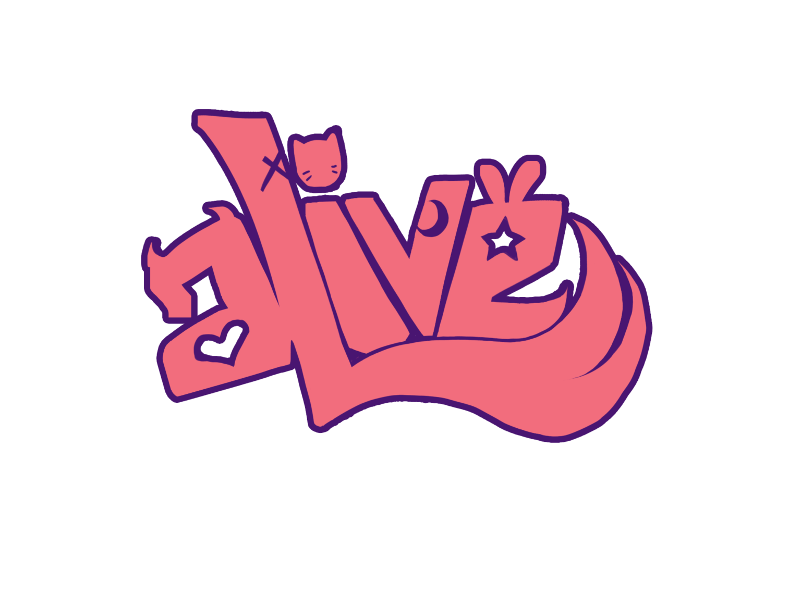

Nossos Talentos


Sobre
aLive é a primeira agência de idols virtuais no Brasil, cujo foco é o crescimento de seus talentos para espalhar por todo o nosso país, e também pelo mundo, essa cultura que vem se manifestando no ramo de entretenimento digital. Criando, assim, uma comunidade repleta de histórias no querido e já amado por muitos brasileiros, universo de vtubers!